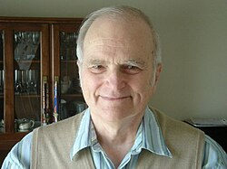

Dick Stearns | |
|---|---|
 | |
| Born | Richard Edwin Stearns July 5, 1936 |
| Education | Carleton College (BA) Princeton University (MA, PhD) |
| Awards | ACM Turing Award (1993) Frederick W. Lanchester Prize (1995) |
| Scientific career | |
| Institutions | University at Albany |
| Harold W. Kuhn | |
Doctoral students | Madhav V. Marathe Thomas O'Connell |
{kind=link}
Richard Edwin Stearns (born July 5, 1936) is an American computer scientist who, with Juris Hartmanis, received the 1993 ACM Turing Award "in recognition of their seminal paper which established the foundations for the field of computational complexity theory".[1] In 1994 he was inducted as a Fellow of the Association for Computing Machinery.
Stearns graduated with a B.A. in mathematics from Carleton College in 1958.[2] He then received his Ph.D. in mathematics from Princeton University in 1961 after completing a doctoral dissertation, titled Three person cooperative games without side payments, under the supervision of Harold W. Kuhn.[3] Stearns is now Distinguished Professor Emeritus of Computer Science at the University at Albany, which is part of the State University of New York.[4]
Bibliography
- Stearns, R.E.; Hartmanis, J. (March 1963), "Regularity preserving modifications of regular expressions", Information and Control, 6 (1): 55–69, doi:10.1016/S0019-9958(63)90110-4. A first systematic study of language operations that preserve regular languages.
- Hartmanis, J.; Stearns, R. E. (May 1965), "On the computational complexity of algorithms", Transactions of the American Mathematical Society, 117, American Mathematical Society: 285–306, doi:10.2307/1994208, JSTOR 1994208, MR 0170805. Contains the time hierarchy theorem, one of the theorems that shaped the field of computational complexity theory.
- Stearns, R.E. (September 1967), "A Regularity Test for Pushdown Machines", Information and Control, 11 (3): 323–340, doi:10.1016/S0019-9958(67)90591-8. Answers a basic question about deterministic pushdown automata: it is decidable whether a given deterministic pushdown automaton accepts a regular language.
- Lewis II, P.M.; Stearns, R.E. (1968), "Syntax-Directed Transduction", Journal of the ACM, 15 (3): 465–488, doi:10.1145/321466.321477, S2CID 16512120. Introduces LL parsers, which play an important role in compiler design.
References
- ^ Lewis, Philip M. "Richard ("Dick") Edwin Stearns". AMTuring.ACM.org. Association for Computing Machinery. Retrieved 10 March 2019.
- ^ "Richard E Stearns - A.M. Turing Award Laureate". amturing.acm.org. Retrieved 18 June 2020.
- ^ Stearns, Richard Edwin (1961). Three person cooperative games without side payments.
- ^ "Richard E. Stearns". IEEE Xplore. Retrieved 15 February 2024.
External links
- Official website

- Richard Edwin Stearns at DBLP Bibliography Server
- Richard Edward Stearns at the Mathematics Genealogy Project